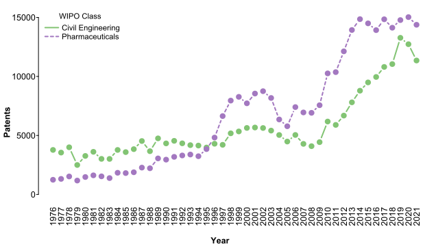
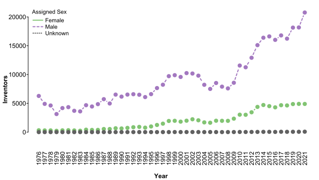
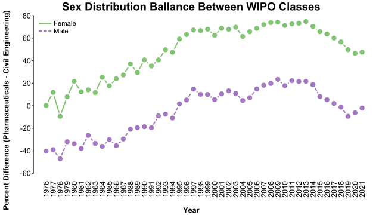

wipo_contrast.RmdBuilt with R 4.2.1
From the previous example we can see that inventors of different sex groups seem to be represented differently by classes of patents. Here, we’ll focus on two of the World Intellectual Property Organization (WIPO) classes: Pharmaceuticals, which has a particularly high allocation of female-assigned inventors, and Civil Engineering, which has a particularly high allocation of male-assigned inventors.
library(uspto)
outDir <- "../patentsview/"We’ll start by collecting a unified set of patents that have either of the focal WIPO classes:
contrast_inventors_file <- paste0(outDir, "contrast_inventors.csv.xz")
if (file.exists(contrast_inventors_file)) {
contrast_inventors <- vroom::vroom(contrast_inventors_file, show_col_types = FALSE)
} else {
# 1. identify patents that fall exclusively into one of the two focal WIPO classes
wipo_fields <- download_patentsview_bulk("wipo_field", outDir)
wipo_fields <- c(
pharma = wipo_fields[wipo_fields$field_title == "Pharmaceuticals", "id", drop = TRUE],
civil = wipo_fields[wipo_fields$field_title == "Civil engineering", "id", drop = TRUE]
)
wipo_matrix <- patentsview_class_matrix("wipo", paste0(outDir, "wipo_matrix.rds"), dir = outDir)
wipo_pharma <- names(which(
wipo_matrix[, wipo_fields[["pharma"]]] != 0 & wipo_matrix[, wipo_fields[["civil"]]] == 0
))
wipo_civil <- names(which(
wipo_matrix[, wipo_fields[["civil"]]] != 0 & wipo_matrix[, wipo_fields[["pharma"]]] == 0
))
wipo_targets <- c(wipo_pharma, wipo_civil)
# 2. identify the inventors associated with those patents
patent_inventors <- download_patentsview_bulk(
"patent_inventor", outDir,
make_db = TRUE,
partition = list(series_code = function(d) substr(d$patent_id, 1, 2))
)
contrast_inventors <- dplyr::collect(dplyr::filter(
patent_inventors, patent_id %in% wipo_targets
))
contrast_inventors$n_inventors <- as.numeric(tapply(
contrast_inventors$inventor_id, contrast_inventors$patent_id, length
)[contrast_inventors$patent_id])
# 3. combine patent and inventor data
patents <- download_patentsview_bulk("patent", outDir, make_db = TRUE)
patents_target <- as.data.frame(dplyr::collect(dplyr::select(dplyr::filter(
patents, as.character(number) %in% wipo_targets
), number, type, date, num_claims, withdrawn, kind)))
rownames(patents_target) <- patents_target$number
contrast_inventors <- cbind(contrast_inventors, patents_target[contrast_inventors$patent_id, -1])
contrast_inventors$WIPO_class <- c(
"FALSE" = "Civil Engineering", "TRUE" = "Pharmaceuticals"
)[as.character(contrast_inventors$patent_id %in% wipo_pharma)]
# 4. add assignee data
patent_assignees <- download_patentsview_bulk(
"patent_assignee", outDir,
make_db = TRUE,
partition = list(series_code = function(d) substr(d$patent_id, 1, 2))
)
assignees <- dplyr::collect(dplyr::filter(
patent_assignees, patent_id %in% contrast_inventors$patent_id
))
assignees <- download_patentsview_bulk("rawassignee", outDir, make_db = TRUE)
assignees_target <- dplyr::collect(dplyr::filter(
assignees,
as.character(patent_id) %in% contrast_inventors$patent_id & sequence == 0 & !is.na(organization)
))
contrast_inventors$assignee_id <- structure(
assignees_target$assignee_id,
names = assignees_target$patent_id
)[contrast_inventors$patent_id]
contrast_inventors$assignee_type <- structure(
assignees_target$type,
names = assignees_target$patent_id
)[contrast_inventors$patent_id]
contrast_inventors$assignee_organization <- structure(
assignees_target$organization,
names = assignees_target$patent_id
)[contrast_inventors$patent_id]
# 5. add location information
locations <- download_patentsview_bulk("location", outDir, make_db = TRUE)
locations_target <- as.data.frame(dplyr::collect(dplyr::filter(
locations, id %in% contrast_inventors$location_id
)))
locations_target[is.na(locations_target$country), "country"] <- "US"
locations_target <- locations_target[, !colnames(locations_target) %in% c("state", "county")]
rownames(locations_target) <- locations_target$id
contrast_inventors <- contrast_inventors[contrast_inventors$location_id %in% locations_target$id, -4]
contrast_inventors <- cbind(contrast_inventors, locations_target[contrast_inventors$location_id, -1])
contrast_inventors$n_countries <- as.numeric(tapply(
contrast_inventors$country, contrast_inventors$patent_id, function(cs) length(unique(cs))
)[contrast_inventors$patent_id])
# 6. add sex predictions
inventor_sex <- vroom::vroom(
paste0(outDir, "inventor_sex.csv.xz"),
show_col_types = FALSE
)
contrast_inventors$prob_fem <- structure(
inventor_sex$prob_fem,
names = inventor_sex$id
)[contrast_inventors$inventor_id]
contrast_inventors$pred_fem_patentsview <- structure(
inventor_sex$pred_fem_patentsview,
names = inventor_sex$id
)[contrast_inventors$inventor_id]
vroom::vroom_write(contrast_inventors, contrast_inventors_file, ",")
}And get a high-level feel for the set:
# sex breakdowns
## PatentsView assignments
contrast_inventors$sex_patentsview <- "Unknown"
contrast_inventors$sex_patentsview[contrast_inventors$pred_fem_patentsview == 1] <- "Female"
contrast_inventors$sex_patentsview[contrast_inventors$pred_fem_patentsview == 0] <- "Male"
sex_patentsview <- table(contrast_inventors$sex_patentsview, contrast_inventors$WIPO_class)
sex_patentsview <- sweep(sex_patentsview, 2, colSums(sex_patentsview), "/") * 100
kable(sex_patentsview, digits = 3, caption = "Sex Breakdown - PatentsView")| Civil Engineering | Pharmaceuticals | |
|---|---|---|
| Female | 6.095 | 18.769 |
| Male | 91.016 | 76.374 |
| Unknown | 2.889 | 4.856 |
## Aggregate assignments
contrast_inventors$sex_aggregate <- "Unknown"
contrast_inventors$sex_aggregate[contrast_inventors$prob_fem > .5] <- "Female"
contrast_inventors$sex_aggregate[contrast_inventors$prob_fem < .5] <- "Male"
sex_aggregate <- table(contrast_inventors$sex_aggregate, contrast_inventors$WIPO_class)
sex_aggregate <- sweep(sex_aggregate, 2, colSums(sex_aggregate), "/") * 100
kable(sex_aggregate, digits = 3, caption = "Sex Breakdown - Aggregate")| Civil Engineering | Pharmaceuticals | |
|---|---|---|
| Female | 5.729 | 20.307 |
| Male | 94.100 | 79.357 |
| Unknown | 0.171 | 0.335 |
## Combined -- defaults to PatentsView, falls back on aggregate
contrast_inventors$pred_female <- contrast_inventors$pred_fem_patentsview == 1 |
(contrast_inventors$pred_fem_patentsview != 0 & contrast_inventors$prob_fem > .5)
contrast_inventors$pred_male <- contrast_inventors$pred_fem_patentsview == 0 |
(contrast_inventors$pred_fem_patentsview != 1 & contrast_inventors$prob_fem < .5)
contrast_inventors$pred_sex <- "Unknown"
contrast_inventors$pred_sex[contrast_inventors$pred_female] <- "Female"
contrast_inventors$pred_sex[contrast_inventors$pred_male] <- "Male"
sex_combined <- table(contrast_inventors$pred_sex, contrast_inventors$WIPO_class)
sex_combined <- sweep(sex_combined, 2, colSums(sex_combined), "/") * 100
kable(sex_combined, digits = 3, caption = "Sex Breakdown - Combined")| Civil Engineering | Pharmaceuticals | |
|---|---|---|
| Female | 6.492 | 19.597 |
| Male | 93.450 | 80.252 |
| Unknown | 0.058 | 0.151 |
# patent-level summary
contrast_inventors$patent_id <- as.character(contrast_inventors$patent_id)
unique_patents <- contrast_inventors[!duplicated(contrast_inventors$patent_id), ]
unique_patents$any_female <- tapply(
contrast_inventors$pred_female, contrast_inventors$patent_id, any
)[unique_patents$patent_id]
nrow(unique_patents)
#> [1] 568326
kable(rbind(
"Countries Per Patent" = summary(unique_patents$n_countries),
"Inventors Per Patent" = summary(unique_patents$n_inventors)
), digits = 3)| Min. | 1st Qu. | Median | Mean | 3rd Qu. | Max. | |
|---|---|---|---|---|---|---|
| Countries Per Patent | 1 | 1 | 1 | 1.103 | 1 | 7 |
| Inventors Per Patent | 1 | 1 | 2 | 2.860 | 4 | 42 |
WIPO classes are defined by sets of International Patent Classification classes, which align with Cooperative Patent Classification (CPC) classes, so we can take a finer look at our contrasts by breaking out those classes:
cpc_matrix_file <- paste0(outDir, "contrast_cpc_matrix.rds")
if (file.exists(cpc_matrix_file)) {
cpc_matrix <- readRDS(cpc_matrix_file)
} else {
cpc <- download_patentsview_bulk("cpc_current", outDir, make_db = TRUE)
cpc_matrix <- patentsview_class_matrix(dplyr::compute(dplyr::filter(
cpc, patent_id %in% contrast_inventors$patent_id
)), cpc_matrix_file, dir = outDir)
}
cpc_group <- as.data.frame(download_patentsview_bulk("cpc_group", outDir))
rownames(cpc_group) <- cpc_group$id
# see which CPC classes best represent each focal WIPO class
wipo_cpc <- vapply(c("Civil Engineering", "Pharmaceuticals"), function(class) {
ids <- unique_patents$patent_id[unique_patents$WIPO_class == class]
ids <- ids[ids %in% rownames(cpc_matrix)]
colSums(cpc_matrix[ids, ] != 0)
}, cpc_matrix[1, ])
wipo_cpc <- as.data.frame(sweep(wipo_cpc, 2, table(unique_patents$WIPO_class), "/") * 100)
wipo_cpc$Difference <- wipo_cpc$Pharmaceuticals - wipo_cpc$`Civil Engineering`
wipo_cpc$Title <- cpc_group[rownames(wipo_cpc), "title"]
wipo_cpc <- wipo_cpc[order(-wipo_cpc$Difference), ]
kable(
wipo_cpc[c(1:20, seq_len(20) + nrow(wipo_cpc) - 20), ],
digits = 3, caption = "Percent of focal patents in which each CPC class appears"
)| Civil Engineering | Pharmaceuticals | Difference | Title | |
|---|---|---|---|---|
| A61K | 0.007 | 76.781 | 76.774 | PREPARATIONS FOR MEDICAL, DENTAL, OR TOILET PURPOSES |
| A61P | 0.001 | 69.750 | 69.749 | SPECIFIC THERAPEUTIC ACTIVITY OF CHEMICAL COMPOUNDS OR MEDICINAL PREPARATIONS |
| C07D | 0.019 | 26.163 | 26.145 | HETEROCYCLIC COMPOUNDS |
| C07K | 0.003 | 24.184 | 24.182 | PEPTIDES |
| C12N | 0.022 | 15.633 | 15.611 | MICROORGANISMS OR ENZYMES; COMPOSITIONS THEREOF; PROPAGATING, PRESERVING, OR MAINTAINING MICROORGANISMS; MUTATION OR GENETIC ENGINEERING; CULTURE MEDIA |
| C07C | 0.049 | 6.815 | 6.766 | ACYCLIC OR CARBOCYCLIC COMPOUNDS |
| G01N | 1.171 | 7.388 | 6.216 | INVESTIGATING OR ANALYSING MATERIALS BY DETERMINING THEIR CHEMICAL OR PHYSICAL PROPERTIES |
| A61Q | 0.003 | 3.871 | 3.868 | SPECIFIC USE OF COSMETICS OR SIMILAR TOILET PREPARATIONS |
| Y10S | 6.465 | 10.097 | 3.633 | TECHNICAL SUBJECTS COVERED BY FORMER USPC CROSS-REFERENCE ART COLLECTIONS [XRACs] AND DIGESTS |
| A61L | 0.112 | 3.604 | 3.492 | METHODS OR APPARATUS FOR STERILISING MATERIALS OR OBJECTS IN GENERAL; DISINFECTION, STERILISATION, OR DEODORISATION OF AIR; CHEMICAL ASPECTS OF BANDAGES, DRESSINGS, ABSORBENT PADS, OR SURGICAL ARTICLES; MATERIALS FOR BANDAGES, DRESSINGS, ABSORBENT PADS, OR SURGICAL ARTICLES |
| C12Q | 0.015 | 3.371 | 3.356 | MEASURING OR TESTING PROCESSES INVOLVING ENZYMES, NUCLEIC ACIDS OR MICROORGANISMS ; COMPOSITIONS OR TEST PAPERS THEREFOR; PROCESSES OF PREPARING SUCH COMPOSITIONS; CONDITION-RESPONSIVE CONTROL IN MICROBIOLOGICAL OR ENZYMOLOGICAL PROCESSES |
| A23L | 0.011 | 2.917 | 2.905 | FOODS, FOODSTUFFS, OR NON-ALCOHOLIC BEVERAGES, NOT COVERED BY SUBCLASSES A21D OR A23B-A23J; THEIR PREPARATION OR TREATMENT, e.g. COOKING, MODIFICATION OF NUTRITIVE QUALITIES, PHYSICAL TREATMENT ; PRESERVATION OF FOODS OR FOODSTUFFS, IN GENERAL |
| C07H | 0.008 | 2.867 | 2.858 | SUGARS; DERIVATIVES THEREOF; NUCLEOSIDES; NUCLEOTIDES; NUCLEIC ACIDS |
| C07F | 0.006 | 2.797 | 2.792 | ACYCLIC, CARBOCYCLIC OR HETEROCYCLIC COMPOUNDS CONTAINING ELEMENTS OTHER THAN CARBON, HYDROGEN, HALOGEN, OXYGEN, NITROGEN, SULFUR, SELENIUM OR TELLURIUM |
| Y02A | 2.122 | 4.831 | 2.709 | TECHNOLOGIES FOR ADAPTATION TO CLIMATE CHANGE |
| C12Y | 0.003 | 2.583 | 2.579 | ENZYMES |
| A61M | 0.044 | 1.851 | 1.806 | DEVICES FOR INTRODUCING MEDIA INTO, OR ONTO, THE BODY ; DEVICES FOR TRANSDUCING BODY MEDIA OR FOR TAKING MEDIA FROM THE BODY ; DEVICES FOR PRODUCING OR ENDING SLEEP OR STUPOR |
| A01N | 0.047 | 1.831 | 1.784 | PRESERVATION OF BODIES OF HUMANS OR ANIMALS OR PLANTS OR PARTS THEREOF ; BIOCIDES, e.g. AS DISINFECTANTS, AS PESTICIDES OR AS HERBICIDES ; PEST REPELLANTS OR ATTRACTANTS; PLANT GROWTH REGULATORS |
| A23V | 0.003 | 1.647 | 1.644 | INDEXING SCHEME RELATING TO FOODS, FOODSTUFFS OR NON-ALCOHOLIC BEVERAGES |
| C12P | 0.021 | 1.458 | 1.437 | FERMENTATION OR ENZYME-USING PROCESSES TO SYNTHESISE A DESIRED CHEMICAL COMPOUND OR COMPOSITION OR TO SEPARATE OPTICAL ISOMERS FROM A RACEMIC MIXTURE |
| F16L | 2.310 | 0.005 | -2.305 | PIPES; JOINTS OR FITTINGS FOR PIPES; SUPPORTS FOR PIPES, CABLES OR PROTECTIVE TUBING; MEANS FOR THERMAL INSULATION IN GENERAL |
| E03C | 2.451 | 0.000 | -2.451 | DOMESTIC PLUMBING INSTALLATIONS FOR FRESH WATER OR WASTE WATER ; SINKS |
| E02B | 2.583 | 0.000 | -2.582 | HYDRAULIC ENGINEERING |
| E05C | 2.880 | 0.000 | -2.880 | BOLTS OR FASTENING DEVICES FOR WINGS, SPECIALLY FOR DOORS OR WINDOWS |
| E04G | 3.244 | 0.000 | -3.244 | SCAFFOLDING; FORMS; SHUTTERING; BUILDING IMPLEMENTS OR AIDS, OR THEIR USE; HANDLING BUILDING MATERIALS ON THE SITE; REPAIRING, BREAKING-UP OR OTHER WORK ON EXISTING BUILDINGS |
| E01C | 3.333 | 0.000 | -3.333 | CONSTRUCTION OF, OR SURFACES FOR, ROADS, SPORTS GROUNDS, OR THE LIKE; MACHINES OR AUXILIARY TOOLS FOR CONSTRUCTION OR REPAIR |
| E04D | 3.424 | 0.000 | -3.424 | ROOF COVERINGS; SKY-LIGHTS; GUTTERS; ROOF-WORKING TOOLS |
| E02D | 3.836 | 0.000 | -3.836 | FOUNDATIONS; EXCAVATIONS; EMBANKMENTS ; UNDERGROUND OR UNDERWATER STRUCTURES |
| E05D | 3.868 | 0.000 | -3.868 | HINGES OR SUSPENSION DEVICES FOR DOORS, WINDOWS OR WINGS |
| E05F | 4.154 | 0.000 | -4.154 | DEVICES FOR MOVING WINGS INTO OPEN OR CLOSED POSITION; CHECKS FOR WINGS; WING FITTINGS NOT OTHERWISE PROVIDED FOR, CONCERNED WITH THE FUNCTIONING OF THE WING |
| E04C | 4.332 | 0.000 | -4.332 | STRUCTURAL ELEMENTS; BUILDING MATERIALS |
| E04F | 5.447 | 0.001 | -5.446 | FINISHING WORK ON BUILDINGS, e.g. STAIRS, FLOORS |
| E02F | 5.644 | 0.000 | -5.644 | DREDGING; SOIL-SHIFTING |
| E05Y | 6.366 | 0.000 | -6.366 | INDEXING SCHEME RELATING TO HINGES OR OTHER SUSPENSION DEVICES FOR DOORS, WINDOWS OR WINGS AND DEVICES FOR MOVING WINGS INTO OPEN OR CLOSED POSITION, CHECKS FOR WINGS AND WING FITTINGS NOT OTHERWISE PROVIDED FOR, CONCERNED WITH THE FUNCTIONING OF THE WING |
| E04H | 6.929 | 0.000 | -6.929 | BUILDINGS OR LIKE STRUCTURES FOR PARTICULAR PURPOSES; SWIMMING OR SPLASH BATHS OR POOLS; MASTS; FENCING; TENTS OR CANOPIES, IN GENERAL |
| E06B | 7.114 | 0.001 | -7.113 | FIXED OR MOVABLE CLOSURES FOR OPENINGS IN BUILDINGS, VEHICLES, FENCES OR LIKE ENCLOSURES IN GENERAL, e.g. DOORS, WINDOWS, BLINDS, GATES |
| E04B | 8.470 | 0.000 | -8.470 | GENERAL BUILDING CONSTRUCTIONS; WALLS, e.g. PARTITIONS; ROOFS; FLOORS; CEILINGS; INSULATION OR OTHER PROTECTION OF BUILDINGS |
| E05B | 8.500 | 0.001 | -8.499 | LOCKS; ACCESSORIES THEREFOR; HANDCUFFS |
| Y10T | 21.453 | 1.734 | -19.719 | TECHNICAL SUBJECTS COVERED BY FORMER US CLASSIFICATION |
| E21B | 27.344 | 0.000 | -27.343 | EARTH DRILLING, e.g. DEEP DRILLING ; OBTAINING OIL, GAS, WATER, SOLUBLE OR MELTABLE MATERIALS OR A SLURRY OF MINERALS FROM WELLS |
We can also look at inventor sex breakdowns within CPC classes to see which CPC classes might be driving the WIPO class inventor sex differences:
sex_cpc <- vapply(c("Female", "Male"), function(sex) {
ids <- contrast_inventors$patent_id[contrast_inventors$pred_sex == sex]
ids <- ids[ids %in% rownames(cpc_matrix)]
colSums(cpc_matrix[ids, ] != 0)
}, cpc_matrix[1, ])
sex_cpc <- as.data.frame(sweep(
sex_cpc, 2, table(contrast_inventors$pred_sex, exclude = "Unknown"), "/"
) * 100)
sex_cpc$Difference <- sex_cpc$Female - sex_cpc$Male
sex_cpc$`Class Difference` <- wipo_cpc[rownames(sex_cpc), "Difference"]
sex_cpc$Title <- cpc_group[rownames(sex_cpc), "title"]
sex_cpc <- sex_cpc[order(-sex_cpc$Difference), ]
kable(
sex_cpc[c(1:20, seq_len(20) + nrow(sex_cpc) - 20), ],
digits = 3, caption = "Percent of inventors in each sex group on a patent with the given class"
)| Female | Male | Difference | Class Difference | Title | |
|---|---|---|---|---|---|
| A61P | 67.285 | 48.940 | 18.344 | 69.749 | SPECIFIC THERAPEUTIC ACTIVITY OF CHEMICAL COMPOUNDS OR MEDICINAL PREPARATIONS |
| A61K | 64.474 | 46.239 | 18.235 | 76.774 | PREPARATIONS FOR MEDICAL, DENTAL, OR TOILET PURPOSES |
| C07K | 24.548 | 15.237 | 9.311 | 24.182 | PEPTIDES |
| C12N | 15.386 | 9.307 | 6.079 | 15.611 | MICROORGANISMS OR ENZYMES; COMPOSITIONS THEREOF; PROPAGATING, PRESERVING, OR MAINTAINING MICROORGANISMS; MUTATION OR GENETIC ENGINEERING; CULTURE MEDIA |
| C07D | 27.763 | 23.587 | 4.176 | 26.145 | HETEROCYCLIC COMPOUNDS |
| G01N | 8.217 | 5.013 | 3.204 | 6.216 | INVESTIGATING OR ANALYSING MATERIALS BY DETERMINING THEIR CHEMICAL OR PHYSICAL PROPERTIES |
| C12Q | 3.561 | 2.065 | 1.496 | 3.356 | MEASURING OR TESTING PROCESSES INVOLVING ENZYMES, NUCLEIC ACIDS OR MICROORGANISMS ; COMPOSITIONS OR TEST PAPERS THEREFOR; PROCESSES OF PREPARING SUCH COMPOSITIONS; CONDITION-RESPONSIVE CONTROL IN MICROBIOLOGICAL OR ENZYMOLOGICAL PROCESSES |
| A61Q | 3.210 | 1.906 | 1.304 | 3.868 | SPECIFIC USE OF COSMETICS OR SIMILAR TOILET PREPARATIONS |
| Y02A | 4.836 | 3.815 | 1.021 | 2.709 | TECHNOLOGIES FOR ADAPTATION TO CLIMATE CHANGE |
| A23L | 2.636 | 1.620 | 1.016 | 2.905 | FOODS, FOODSTUFFS, OR NON-ALCOHOLIC BEVERAGES, NOT COVERED BY SUBCLASSES A21D OR A23B-A23J; THEIR PREPARATION OR TREATMENT, e.g. COOKING, MODIFICATION OF NUTRITIVE QUALITIES, PHYSICAL TREATMENT ; PRESERVATION OF FOODS OR FOODSTUFFS, IN GENERAL |
| C12Y | 2.480 | 1.533 | 0.947 | 2.579 | ENZYMES |
| A23V | 1.627 | 0.888 | 0.739 | 1.644 | INDEXING SCHEME RELATING TO FOODS, FOODSTUFFS OR NON-ALCOHOLIC BEVERAGES |
| A01K | 1.683 | 0.981 | 0.702 | 1.169 | ANIMAL HUSBANDRY; CARE OF BIRDS, FISHES, INSECTS; FISHING; REARING OR BREEDING ANIMALS, NOT OTHERWISE PROVIDED FOR; NEW BREEDS OF ANIMALS |
| C07C | 6.042 | 5.444 | 0.599 | 6.766 | ACYCLIC OR CARBOCYCLIC COMPOUNDS |
| A61L | 2.453 | 2.011 | 0.442 | 3.492 | METHODS OR APPARATUS FOR STERILISING MATERIALS OR OBJECTS IN GENERAL; DISINFECTION, STERILISATION, OR DEODORISATION OF AIR; CHEMICAL ASPECTS OF BANDAGES, DRESSINGS, ABSORBENT PADS, OR SURGICAL ARTICLES; MATERIALS FOR BANDAGES, DRESSINGS, ABSORBENT PADS, OR SURGICAL ARTICLES |
| A01N | 1.545 | 1.186 | 0.359 | 1.784 | PRESERVATION OF BODIES OF HUMANS OR ANIMALS OR PLANTS OR PARTS THEREOF ; BIOCIDES, e.g. AS DISINFECTANTS, AS PESTICIDES OR AS HERBICIDES ; PEST REPELLANTS OR ATTRACTANTS; PLANT GROWTH REGULATORS |
| C12P | 1.493 | 1.134 | 0.359 | 1.437 | FERMENTATION OR ENZYME-USING PROCESSES TO SYNTHESISE A DESIRED CHEMICAL COMPOUND OR COMPOSITION OR TO SEPARATE OPTICAL ISOMERS FROM A RACEMIC MIXTURE |
| C07H | 2.378 | 2.044 | 0.334 | 2.858 | SUGARS; DERIVATIVES THEREOF; NUCLEOSIDES; NUCLEOTIDES; NUCLEIC ACIDS |
| C07B | 1.479 | 1.151 | 0.328 | 1.384 | GENERAL METHODS OF ORGANIC CHEMISTRY; APPARATUS THEREFOR |
| C12R | 0.718 | 0.464 | 0.254 | 0.660 | INDEXING SCHEME ASSOCIATED WITH SUBCLASSES C12C - C12Q, RELATING TO MICROORGANISMS |
| E02B | 0.326 | 0.783 | -0.457 | -2.582 | HYDRAULIC ENGINEERING |
| E05C | 0.410 | 0.916 | -0.506 | -2.880 | BOLTS OR FASTENING DEVICES FOR WINGS, SPECIALLY FOR DOORS OR WINDOWS |
| F16L | 0.255 | 0.831 | -0.575 | -2.305 | PIPES; JOINTS OR FITTINGS FOR PIPES; SUPPORTS FOR PIPES, CABLES OR PROTECTIVE TUBING; MEANS FOR THERMAL INSULATION IN GENERAL |
| E04G | 0.263 | 0.936 | -0.673 | -3.244 | SCAFFOLDING; FORMS; SHUTTERING; BUILDING IMPLEMENTS OR AIDS, OR THEIR USE; HANDLING BUILDING MATERIALS ON THE SITE; REPAIRING, BREAKING-UP OR OTHER WORK ON EXISTING BUILDINGS |
| E04D | 0.357 | 1.069 | -0.712 | -3.424 | ROOF COVERINGS; SKY-LIGHTS; GUTTERS; ROOF-WORKING TOOLS |
| E05D | 0.557 | 1.274 | -0.717 | -3.868 | HINGES OR SUSPENSION DEVICES FOR DOORS, WINDOWS OR WINGS |
| E02D | 0.390 | 1.200 | -0.810 | -3.836 | FOUNDATIONS; EXCAVATIONS; EMBANKMENTS ; UNDERGROUND OR UNDERWATER STRUCTURES |
| E01C | 0.288 | 1.143 | -0.855 | -3.333 | CONSTRUCTION OF, OR SURFACES FOR, ROADS, SPORTS GROUNDS, OR THE LIKE; MACHINES OR AUXILIARY TOOLS FOR CONSTRUCTION OR REPAIR |
| E04C | 0.477 | 1.378 | -0.901 | -4.332 | STRUCTURAL ELEMENTS; BUILDING MATERIALS |
| E04F | 0.590 | 1.646 | -1.056 | -5.446 | FINISHING WORK ON BUILDINGS, e.g. STAIRS, FLOORS |
| Y10S | 6.461 | 7.517 | -1.056 | 3.633 | TECHNICAL SUBJECTS COVERED BY FORMER USPC CROSS-REFERENCE ART COLLECTIONS [XRACs] AND DIGESTS |
| E05F | 0.500 | 1.562 | -1.062 | -4.154 | DEVICES FOR MOVING WINGS INTO OPEN OR CLOSED POSITION; CHECKS FOR WINGS; WING FITTINGS NOT OTHERWISE PROVIDED FOR, CONCERNED WITH THE FUNCTIONING OF THE WING |
| E04H | 0.911 | 2.001 | -1.090 | -6.929 | BUILDINGS OR LIKE STRUCTURES FOR PARTICULAR PURPOSES; SWIMMING OR SPLASH BATHS OR POOLS; MASTS; FENCING; TENTS OR CANOPIES, IN GENERAL |
| E06B | 1.012 | 2.332 | -1.321 | -7.113 | FIXED OR MOVABLE CLOSURES FOR OPENINGS IN BUILDINGS, VEHICLES, FENCES OR LIKE ENCLOSURES IN GENERAL, e.g. DOORS, WINDOWS, BLINDS, GATES |
| E05Y | 0.826 | 2.261 | -1.434 | -6.366 | INDEXING SCHEME RELATING TO HINGES OR OTHER SUSPENSION DEVICES FOR DOORS, WINDOWS OR WINGS AND DEVICES FOR MOVING WINGS INTO OPEN OR CLOSED POSITION, CHECKS FOR WINGS AND WING FITTINGS NOT OTHERWISE PROVIDED FOR, CONCERNED WITH THE FUNCTIONING OF THE WING |
| E05B | 1.248 | 2.802 | -1.554 | -8.499 | LOCKS; ACCESSORIES THEREFOR; HANDCUFFS |
| E02F | 0.654 | 2.208 | -1.555 | -5.644 | DREDGING; SOIL-SHIFTING |
| E04B | 0.987 | 2.704 | -1.717 | -8.470 | GENERAL BUILDING CONSTRUCTIONS; WALLS, e.g. PARTITIONS; ROOFS; FLOORS; CEILINGS; INSULATION OR OTHER PROTECTION OF BUILDINGS |
| Y10T | 3.769 | 8.048 | -4.278 | -19.719 | TECHNICAL SUBJECTS COVERED BY FORMER US CLASSIFICATION |
| E21B | 4.235 | 11.252 | -7.017 | -27.343 | EARTH DRILLING, e.g. DEEP DRILLING ; OBTAINING OIL, GAS, WATER, SOLUBLE OR MELTABLE MATERIALS OR A SLURRY OF MINERALS FROM WELLS |
Frequencies of patent categories change over time:
unique_patents$year <- substr(unique_patents$date, 1, 4)
wipo_trends <- as.data.frame(table(unique_patents$WIPO_class, unique_patents$year))
colnames(wipo_trends) <- c("WIPO_Class", "Year", "Patents")
library(splot)
splot(Patents ~ Year * WIPO_Class, wipo_trends, line.type = "b", title = FALSE)
Frequencies of new inventors by assigned sex also changes over time:
contrast_inventors$year <- substr(contrast_inventors$date, 1, 4)
contrast_inventors <- contrast_inventors[order(contrast_inventors$date), ]
unique_inventors <- contrast_inventors[!duplicated(contrast_inventors$inventor_id), ]
sex_trends <- as.data.frame(table(unique_inventors$pred_sex, unique_inventors$year))
colnames(sex_trends) <- c("Assigned_Sex", "Year", "Inventors")
splot(Inventors ~ Year * Assigned_Sex, sex_trends, line.type = "b", title = FALSE)
How much might a difference in sex distribution between classes be due to time? That is, we might expect to see more new inventor participation in the dominant or rising class regardless of sex, which could shift to sex distributions between classes.
To get at this, we might look at the distribution of first-seen inventors by sex group between classes over time:
wipo_sex_yearly <- as.data.frame(t(vapply(split(
unique_inventors[, c("WIPO_class", "pred_sex")], unique_inventors$year
), function(d) {
s <- table(d$pred_sex, d$WIPO_class, exclude = "Unknown")
s <- s / rowSums(s) * 100
s[, 2] - s[, 1]
}, numeric(2))))
wipo_sex_yearly$Year <- rownames(wipo_sex_yearly)
splot(
wipo_sex_yearly[, 1:2] ~ wipo_sex_yearly$Year,
line.type = "b",
title = "Sex Distribution Ballance Between WIPO Classes", labx = "Year",
laby = "Percent Difference (Pharmaceuticals - Civil Engineering)"
)
Here we can see that first-time female-assigned inventors have consistently been more shifted toward pharmaceuticals than first-time male-assigned inventors, and that in both groups there has been a fairly consistent trend toward pharmaceuticals. Though it is interesting to see that in the early years, first-time female-assigned inventors were more evenly split between classes, and later on, first-time male-assigned inventors were more evenly split between classes, though there is a more recent trend in the original direction.